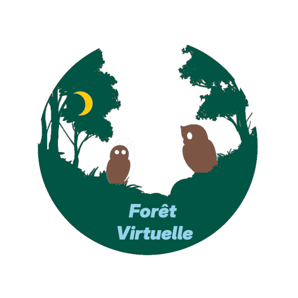

Portfolio
Ce site sur lequel vous vous trouvez actuellement. Il a pour objectif de présenter ce que je fais en informatique et en mathématique.
Altius Star
Site web de création de modèles fictifs pour rendre ma vie ludique. Je crée une compétence représentée par un personnage et je réalise les quêtes de ce personnage afin de faire croître cette compétence.
Isaflot
Site web qui suit la progression de vos intelligences selon le nombre d'heure de pratique. Vous choisissez une intelligence et vous suivez votre progression.

Forêt Virtuelle
Site pour approfondir ses connaissances en mathématiques en accédant à des histoires, des leçons et des exercices interactifs en format texte, images et audio .